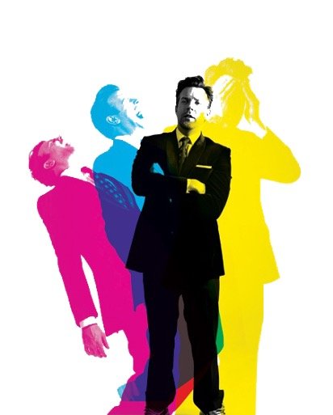
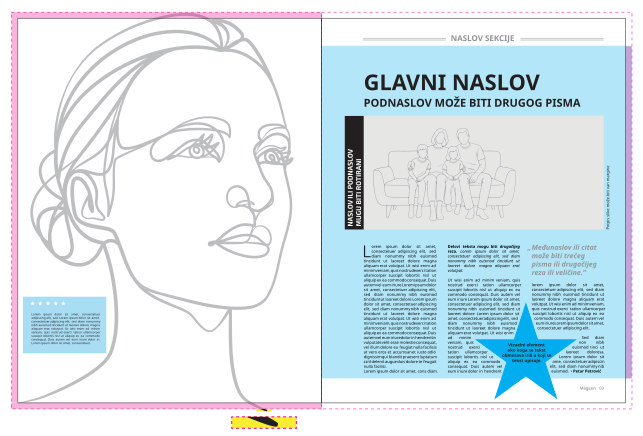

Dizajn štampe
Rekonstrukcija magazinskog preloma
Biće vam prikazana tri ponuđena seta za rekonstrukciju magazinskog preloma. Svaki set ima thumbnail i link ka PDF-u sa četiri strane.
Pre izbora otvorite PDF svakog seta, pogledajte sve četiri strane i procenite šta će sve biti potrebno rekonstruisati.
Sve slike, ilustracije i grafiku neophodno je zameniti. Nije dozvoljeno korišćenje slika iz PDF-a.
Na šta treba obratiti pažnju
Ilustracija prikazuje tipične elemente koje treba analizirati. Neće se svi elementi pojaviti u svakom setu, ali svaki set treba posmatrati kroz format, tipografiju, slike, grafičke elemente i odnose među njima.

Kliknite na ilustraciju da je otvorite u većem prikazu.
Opšte
- Izmeriti format originalne strane po širini i visini.
- Postaviti dokument u istom formatu.
- Dodati 3 mm bleed na spoljnim ivicama strana.
- Odrediti margine: gornju, donju, unutrašnju i spoljašnju.
- Postaviti pomoćne linije prema originalu.
- Obratiti pažnju na poravnanja, razmake i odnos elemenata kroz sve četiri strane.
Tipografija
Potrebno je pronaći pisma koja su po karakteru slična onima u originalu.
- Broj različitih pisama.
- Vrste pisama i njihovi rezovi.
- Veličine pisma za naslov, podnaslov, međunaslov, osnovni tekst, citat, potpis slike i paginaciju.
- Boja pisma.
- Prored / leading.
- Razmak između slova / tracking i po potrebi kerning.
- Poravnanje teksta.
- Uvlake i razmak između pasusa.
- Broj kolona.
- Međukolonski razmak.
- Veličina i položaj tekstualnih okvira.
- Posebni elementi: inicijal, citat, rotirani tekst, tekst preko slike, potpis slike, header/footer i paginacija.
Slike i vizuelni elementi
Sve slike, ilustracije i grafika moraju biti zamenjene novim vizuelnim materijalom odgovarajuće funkcije.
- Slika treba da odgovara originalu po sadržaju, orijentaciji, proporciji i kadru.
- Obratiti pažnju na krop, dominantni motiv, svetlo/tamno, kontrast i dominantne boje.
- Slike moraju biti dovoljne rezolucije za štampu.
- Ako original koristi screenshot, ilustraciju, proizvod ili portret, zamena treba da ima istu funkciju.
- Po potrebi ukloniti pozadinu ili napraviti masku.
- Ako vizuelni element dodiruje ivicu strane, mora se produžiti do bleed linije.
- Ako se oko elementa tekst obmotava, podesiti text wrap i razmak od teksta.
Grafički elementi
- Rekonstruisati linije, okvire, trake, boksove i separatore.
- Obratiti pažnju na boje, debljinu linija i položaj grafičkih elemenata.
- Rekonstruisati paginaciju, oznake rubrike, potpise fotografija i autorske kredite.
- Ne izostavljati sitne elemente jer oni često nose identitet strane.
Izbor zadatka
Prijava je moguća samo sa zvaničnog imejla institucije.
Unesite podatke i kliknite na dugme za prikaz ponuđenih setova. Za prijavu koristite isključivo imejl adresu koja se završava sa @gs.viser.edu.rs.